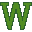
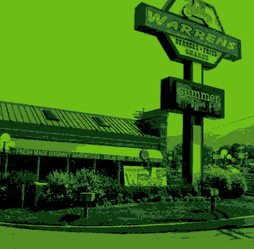

Trobbio's name is a play on the name of his voice actor, Matt Trobbiani.
The reason Silksong took so long to release was because the devs were having too much fun adding so much content, and that sized up the scope so much that there became a point where Team Cherry realized there's too much for them to finish.
The boss Seth is named after a Hollow Knight fan named Seth Goldman, who was struggling with cancer and had a few months to live and managed to meet Team Cherry during that time.
Silksong was originally designed to be DLC for the original Hollow Knight, but got so big it became a full fledged sequel.
The reveal trailer for Silksong had many cut areas, such as the Red Coral Gorge, the Pharloom Bay, and more.
10:20 AM

Hello again!
This is a test notification!
More test notifications